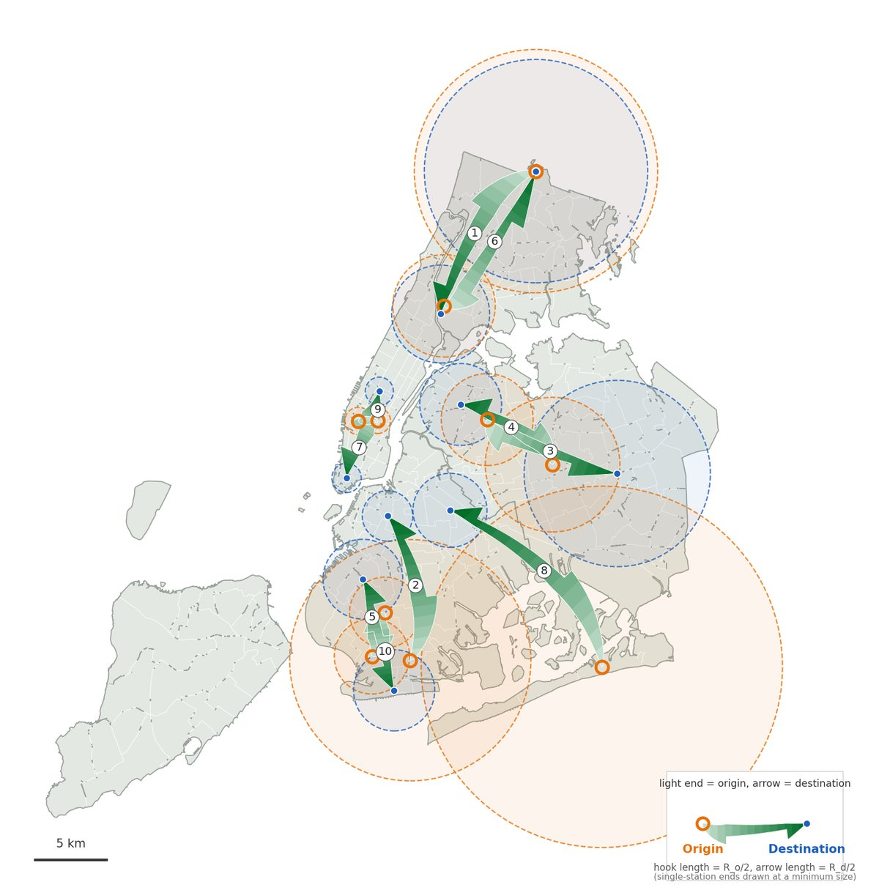
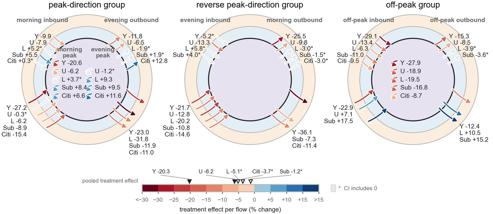
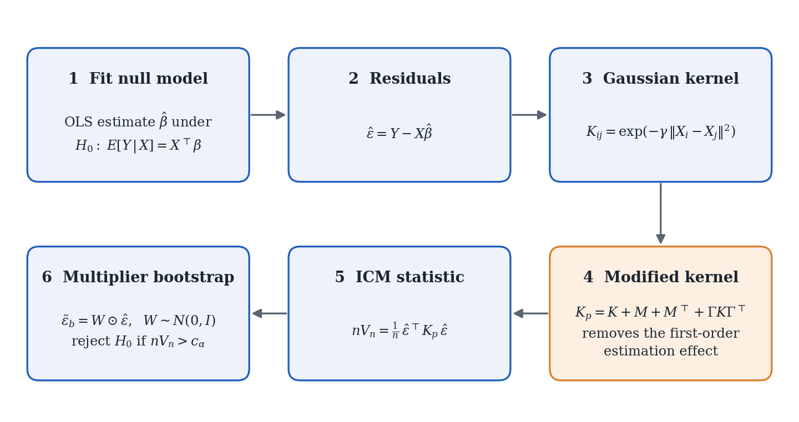

Research Experience
In Progress

Designing a model based on multimodal trip data from 2024 to September 2026 that combines the multilevel, DiD and spatial Durbin model (SDM) frameworks to evaluate the policy's effect on the treatment group and on the control group (the spatial spillover effect).


Extracting urban travel patterns (origin–destination clusters) from chaotic raw OD trips (nearly 70,000 sparse OD pairs) by designing a Bayesian hierarchical Poisson–Gamma model.
Completed


Combined the multilevel and DiD models to estimate the treatment effect by time period, distance and direction (based on the ring structure), to investigate the policy's effect on commuting patterns.


Constructed a kernel-based integrated conditional moment (ICM) test statistic and derived its asymptotic distribution under the null hypothesis to test whether the conditional mean of a response follows a specific parametric form, robust to the choice of parameter estimator.